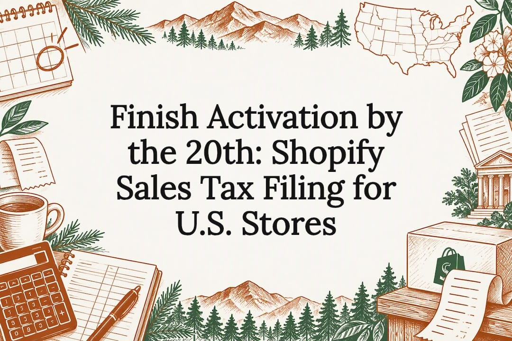
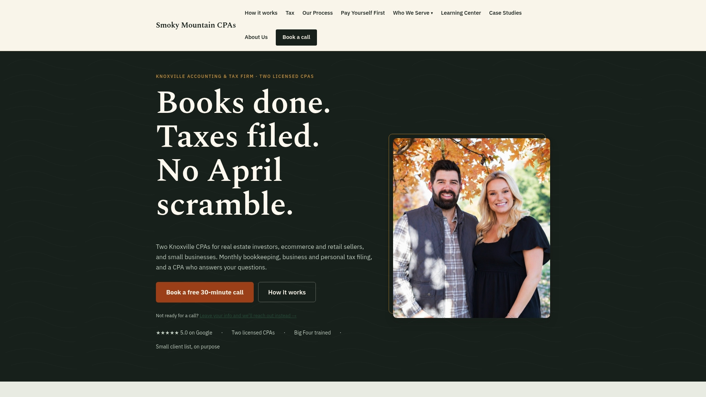

Finish Activation by the 20th: Shopify Sales Tax Filing for U.S. Stores

Shopify can calculate sales tax on every order and, for eligible U.S. stores, can file returns automatically through Shopify Tax. You still decide where your business has nexus, register with each state yourself, and confirm that automated filing actually covers your channels before you rely on it.
TL;DR:
- Shopify’s automated filing only applies to eligible U.S. stores registered with each state’s tax agency and where Shopify Tax is actively calculating orders.
- Proper setup requires registering with each state beforehand, entering sales tax IDs in Shopify, and confirming that Shopify Tax covers all sales channels and order types.
- Reconciliation should be done monthly by comparing Shopify reports to bank deposits and refunds, especially when handling multiple states and marketplace sales.
- Marketplace facilitator laws vary by state, so sellers must keep records of facilitator reports and treat marketplace and direct sales separately for tax purposes.
- Automated filing does not guarantee perfect accuracy; professional CPA assistance becomes necessary during audits, amended filings, or extensive multi-state nexus.
Table of Contents
- Pre-steps and how to set up sales tax collection in Shopify
- Automated filing with Shopify Tax: eligibility, operational setup, and timelines
- Which Shopify reports to use for filing or handing to your CPA
- Marketplace facilitator rules and practical actions Shopify sellers must still take
- Limitations, reconciliation pitfalls, and when to engage a CPA
- How Smoky Mountain CPAs helps Shopify stores
- Author perspective: concise recommended next steps
- If you want help: Smoky Mountain CPAs services for Shopify sellers
- Sources
- FAQ
Pre-steps and how to set up sales tax collection in Shopify
Before you touch a single toggle in Shopify, figure out where your business has nexus, meaning enough sales, inventory, or physical presence in a state to owe tax there. Shopify’s own setup guidance tells merchants to determine that liability and register with each state’s tax agency first. Registering after you start collecting is backward and can create mismatched filings.
Once you have a sales tax ID for a state, here is the admin sequence:
- Go to Settings, then Taxes and duties, then Manage sales tax collection, then United States.
- Select the state you registered in and enter the sales tax ID issued by that state.
- Confirm the state shows as “collecting” before your next order ships there.
- Review advanced settings for shipping taxability, since some states tax shipping and others do not.
- Add product-level tax overrides only for items with special rules, like certain food, clothing, or digital goods categories.
Overrides are the exception, not the default. Most sellers never need one outside a handful of specialty product categories.
Automated filing with Shopify Tax: eligibility, operational setup, and timelines
Automated filing is not universal. It applies only to eligible U.S. stores on Shopify Tax, and only to orders that Shopify Tax actually calculated, so third-party tax apps or unsupported sales channels can knock you out of eligibility for that state. Shopify’s eligibility guidance is explicit that the service files current and upcoming returns, never past or amended ones.
Setup runs like this inside Shopify:
- Go to Finance, then Tax filing, and select Activate for the state you want Shopify to file.
- Enter your business and account details for that state’s filing.
- Set up the return itself, confirming filing frequency and due dates match your registration.
- Complete two-step verification on the state’s own portal where that state requires it.
The operational checklist matters as much as the software: you need an authorized contact on file, a legal signee who can accept filing terms, and a funding account selected for remittance. Miss any one of those and the filing stalls.
Pro Tip: Finish activation by the 20th of the month before your next filing period opens; late setup usually pushes you into filing that period yourself.
Which Shopify reports to use for filing or handing to your CPA
Shopify’s tax reports break down exactly what you owe and where, and picking the right one saves time whether you file yourself or forward it to an accountant.
- The US sales tax report shows net sales, taxable sales, and tax collected by state, county, and city, which is what most jurisdiction-level returns ask for.
- The Jurisdiction report rolls that same data into the specific tax authorities you need to file with, useful when a state splits collection between state, county, and special district rates.
- The Detailed transactions report lists every order line by line, which is what supports you if a state ever asks for backup during an audit.
When you export, choose the exact filing period you are working on and make sure refunds are included, since a return that ignores refunds overstates what you owe. Keep the CSV exports as permanent documentation even after you file, not just until the return is accepted.
Marketplace facilitator rules and practical actions Shopify sellers must still take
If you also sell through a marketplace alongside Shopify, do not assume the marketplace’s tax collection covers everything. Streamlined Sales Tax’s marketplace facilitator guidance makes clear that facilitator laws vary by state, and even when a marketplace collects and remits tax, some states still expect the seller to register, report gross sales, or retain documentation.
- Keep a copy of each marketplace’s facilitator collection statement or tax report as evidence if a state questions why you did not remit directly.
- Track which of your sales channels are marketplace-facilitated versus direct Shopify checkout, since the two often need different treatment.
- Understand that orders processed outside Shopify Tax, including many third-party marketplace orders, are not eligible for Shopify’s automated filing and need separate handling.
Limitations, reconciliation pitfalls, and when to engage a CPA
Automated filing is not a guarantee that the number Shopify reports equals the number you actually owe. Shopify’s reporting documentation notes that jurisdiction-level totals can diverge from final remitted amounts once state filing discounts, exemption certificates, or gross-receipts tax rules enter the picture.
- Compare your Shopify tax reports against actual bank withdrawals for each filing period, not just the collected total.
- Reconcile refunds and marketplace adjustments separately, since both can shift what a return should show.
- Document any exception you find rather than letting it carry forward into the next period unexplained.
Pro Tip: Run this reconciliation monthly instead of waiting for filing deadlines; small mismatches are far easier to trace a few weeks old than a year old.
Hire a CPA when you are filing amended returns, responding to a state audit, or juggling nexus across enough states that manual tracking becomes its own part-time job.
How Smoky Mountain CPAs helps Shopify stores
Some accounting firms work with ecommerce sellers whose books need per-SKU and per-channel accuracy, not just a monthly summary. Having experienced accountants review clients’ books directly matters most when multi-state nexus, marketplace reconciliations, or an amended sales tax return needs a second set of trained eyes.
Author perspective: concise recommended next steps
Register in every state where you have nexus first, then turn on Shopify Tax automated filing only for the states where you actually qualify. Reconcile your reports to your bank deposits every month rather than at filing time, and bring in a CPA the moment you are handling more than a couple of states or facing an amended return. A written checklist beats relying on memory here every time.
— Brooks
If you want help: Smoky Mountain CPAs services for Shopify sellers
Running sales tax alongside daily order volume eats hours you could spend on the business itself. Certain firms provide bookkeeping and tax services tailored to ecommerce sellers, rather than generic small business templates.

- Ongoing bookkeeping and tax service under the Bookkeeping and tax plan keeps your books CPA reviewed every month, sales tax included.
- The In-Depth Diagnostic Review is a one-time $497 review with a written report and video walkthrough if you want a clear picture before committing further.
- A free Shopify bookkeeping checklist is available if you want to try reconciliation on your own first.
If your nexus footprint is small and Shopify Tax already covers your states, self-filing may suit you fine for now. Once multi-state complexity or reconciliation errors start eating your week, reach out through our pricing page for a plan that fits.
This article is general information, not a substitute for advice from a qualified financial advisor. Consult a qualified financial professional about your own circumstances before acting on anything here.
Sources
- Eligibility and considerations for using automated filing with Shopify Tax
- Marketplace facilitator information (Streamlined Sales Tax)
FAQ
Does Shopify report sales tax to states?
Shopify itself does not automatically report your sales to every state; it calculates tax on orders, and only for stores eligible for automated filing does it file returns with the states you set up. Outside that eligible setup, reporting to the state is your responsibility.
How do I file taxes for my Shopify business?
You register with each state where you have nexus, then either activate Shopify Tax automated filing for eligible states or export the US sales tax report and file manually through the state’s own portal. Many sellers use a hybrid, letting Shopify file some states while handling others themselves or through a CPA.
Does Shopify automatically do sales tax?
Shopify automatically calculates sales tax on orders once you set up tax collection for a state, but automatic filing of the return only happens for eligible U.S. stores that have completed Shopify Tax automated filing setup for that specific state. Calculation and filing are two separate steps.
Does Shopify automatically report to IRS?
Sales tax filing through Shopify Tax has nothing to do with IRS reporting, since sales tax is a state-level obligation, not a federal income tax matter. Shopify does issue federal tax forms for payment processing separately, which is a distinct requirement from sales tax collection and filing.
Recommended
- Does Poshmark Remit Tennessee Sales Tax?
- The Real Cost of DIY Shopify Bookkeeping
- Shopify Bookkeeping for Smaller Stores (A2X + DIY)
- Is Your Shopify Payout the Same as Your Revenue?
Made with BabyLoveGrowth AI
Want a CPA to look at your numbers?
Book a free 30 minute call. We will walk through your books and tell you what we see.